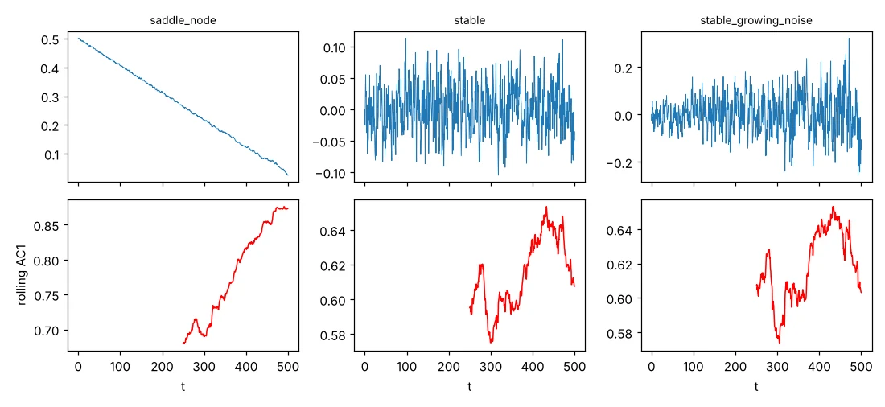

Analysis tooling is easy to sell and hard to audit: the plot looks good and nobody asks what it was checked against. The experiment takes five tools from the kit and puts each one against a reference that is not the model itself.
First passage: PINN against Monte Carlo against the exact answer
On the 1D heat equation, the PINN solves first passage with a maximum error of 5.6×10⁻⁴ against the analytical solution. Monte Carlo, with 20 thousand Euler-Maruyama paths, lands at 4.4×10⁻³, eight times worse. The restricted mean time up to 2.0 closes at 0.87247 for the PINN, against an exact 0.872465 and 0.87515 ± 4.7×10⁻³ for Monte Carlo. The PINN takes 104 s of solver time; Monte Carlo takes the time of the 20 thousand paths.

Koopman: decay rates out of the spectrum
Running a rank-3 DMD on the PINN snapshots, the three mode decay rates come out with relative errors of 0.6%, 0.5% and 1.0% against the exact −D(kπ)² eigenvalues. The control, using snapshots generated from the exact solution, gives zero error, as it must, and the ResDMD residual on the three eigenpairs sits at 9.7×10⁻⁴.
The honest detail: the rank chosen by the Gavish-Donoho criterion on the PINN snapshots is 22, not 3. So the spectrum is recoverable as long as the analyst knows how many modes exist, and that is what the article reports instead of hiding.

Where you measure is worth 45%
Choosing when to measure by Fisher information, the four optimal times are 0, 0, 2.025 and 2.025 over a 401-point grid. The diffuser standard deviation from the Cramér-Rao bound is 0.00102, and the empirical value from 500 fits is 0.00102. Sampling uniformly moves the same two numbers to 0.00149 and 0.00146: 45% worse for the same number of measurements.
Dimensional analysis and early warning
With six quantities and rank 3, Buckingham pi reduces the problem to three groups, and the collapse of the curves goes from 1.68 of relative spread to 8×10⁻⁵, with p=0.002 in a permutation control (999 reassignments). On early-warning indicators, rolling variance and autocorrelation rise before the saddle-node (Kendall tau 0.94 and 0.91, p of 0.005 and 0.01) and do not rise in the stable control (tau −0.22, p=0.55).
And the case that separates the two indicators: a stable system with growing noise lifts the variance (0.97, p=0.005) without lifting the autocorrelation (0.38, p=0.27). One indicator alone would have raised a false alarm, which is why the kit measures both.

What it is worth
Five tools that measure what they promise, each with its reference beside it and its error stated. It is less glamorous than a new architecture, and it is what lets any of them be used in a decision.